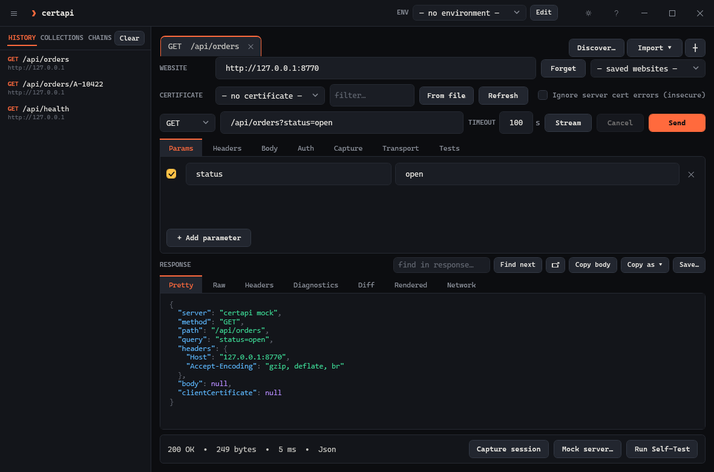
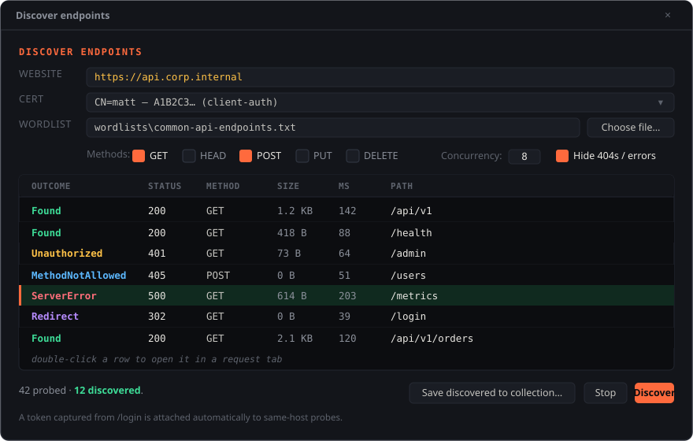
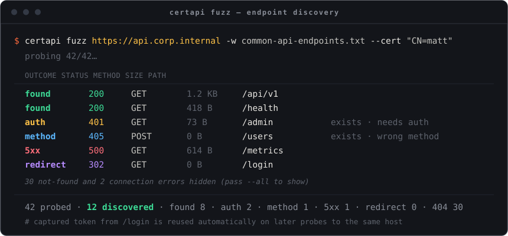
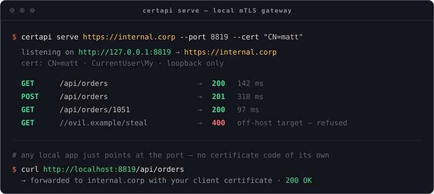

Windows 10/11 · .NET 9 · mutual TLS
mTLS API client for the Windows certificate store
Pick a client certificate from your Windows certificate store, send the request, and Windows signs the handshake. The private key never leaves the store, so smart-card and non-exportable certificates work. A .pfx or .pem file works too. A desktop app and a headless command line share one engine.
mkdir "$env:LOCALAPPDATA\certapi" -Force; cd "$env:LOCALAPPDATA\certapi"
curl.exe -LO https://github.com/Real-Fruit-Snacks/certapi/releases/latest/download/certapi.exe
curl.exe -LO https://github.com/Real-Fruit-Snacks/certapi/releases/latest/download/ApiTester.App.exe# two portable exes, no installer, no admin
ApiTester.App.exe # the desktop app
certapi.exe # the command linegit clone https://github.com/Real-Fruit-Snacks/certapi
dotnet publish src/ApiTester.Cli -c Release -r win-x64 --self-contained -o publishPATH to run certapi from any prompt.PS> certapi send https://api.internal/orders `
--cert "CN=matt" --pretty
200 OK · 41 B · 48 ms · TLS 1.3 · client cert presented
{
"order": "A-10422",
"status": "shipped"
}
# the private key never left the storeWhy
They ask the browser to choose a certificate and complete a mutual-TLS handshake. Most API clients want that certificate and its private key as files on disk, which enterprise and smart-card certificates deliberately don't allow. certapi uses the certificate where it already is, and the operating system does the signing.
The certificate is optional. With none selected it is an ordinary HTTP client, so the same collections, environments and assertions work against anything else too.
What's in it
The Windows certificate store (your Personal store or the machine's), picked by subject, issuer or serial, or a .pfx/.pem file; a smart-card PIN supplied ahead for headless jobs. Server pins by leaf, issuer or key; a private root from a file with --ca-file; revocation checking. System proxy, PAC, SOCKS, bypass lists, --offline.
Tabs, collections, environments with {{variables}}, response captures, request chains, assertions, data-driven runs from CSV/JSON, response diffing against a baseline. Import cURL, Postman, OpenAPI, HAR; export OpenAPI, HAR, markdown notes.
doctor connects one stage at a time and names the one that broke, including the CAs the server accepts client certificates from, matched against yours. --trace, --wire and --frames show what the stack did, down to the plaintext bytes. No driver, no admin.
serve is a local gateway that adds your certificate for apps that can't, in front of one site or many: named sites, a certificate and settings per site, one origin each with --vhost, logins across hosts with --browser, a whole gateway kept in a profile. mock is a standing test server, or a replay of a captured HAR.
Bearer, Basic, OAuth 2.0 (client credentials, password, refresh, auth-code with PKCE, device code), Windows Integrated (Kerberos/NTLM), browser session capture, and automatic token reuse per host. Secrets are DPAPI-encrypted at rest.
run turns a collection into a pass/fail suite with exit codes for CI. bench reports p50/p90/p99 latency over a pooled connection. grpc calls services via reflection or a descriptor set. mcp exposes all of it to an AI agent behind a host allowlist.
Headless
certapi on the command line# one request, certificate from the store
certapi send https://internal.corp/api/orders --cert "CN=matt"
# log in, capture the token, reuse it
certapi send https://internal.corp/auth --capture token=access_token --workspace team.json
certapi send https://internal.corp/api/orders --workspace team.json -H "Authorization: Bearer {{token}}"
# a collection as a pass/fail suite (exit 1 on any failure)
certapi run "internal api" --env Prod --json
# why can't I reach this?
certapi doctor https://internal.corp/api/orders --cert "CN=matt"# a local gateway for an app with no mTLS of its own
certapi serve https://internal.corp --port 8819 --cert "CN=matt" --browser
# many sites on one gateway: check the table, then start it from a profile
certapi serve --port 8819 --upstream api=https://api.corp --upstream hr=https://hr.corp --check
certapi serve --profile corp
# the bytes, as framed and as received; no driver, no admin
certapi send https://internal.corp/api/orders --wire
# gRPC behind mutual TLS
certapi grpc call api.internal:5001 my.pkg.Greeter/SayHello -d '{"name":"Ada"}'
# stream, bench, mock, MCP
certapi sse https://internal.corp/events --max-events 5
certapi bench https://api.internal/health -n 500 -c 20
certapi mock --har session.har --port 8770
certapi mcp --cert "CN=matt" --allow internal.corpBody to stdout, diagnostics to stderr. Exit codes: 0 success · 1 failure · 2 usage · 3 data. certapi <command> --help lists every option, curl habits like -k, -i and -d @file work, and a mistyped flag names the one you meant; the CLI reference has them all on one page.
Screens



certapi fuzz.
certapi serve: an app points at the port and reaches a certificate-protected upstream.
Any local tool that can't present a client certificate gets one this way. Requests to other hosts are refused.
Tested on
certapi only)windows-latest, every push: build with warnings as errors, then the test suiteKnown issues
certapi serve does not proxy gRPC.--protoset needs a descriptor set you already have; certapi does not compile .proto files.--http3 is Windows 11 / Server 2022 and direct connections only.--no-proxy brings them back.__Host-/__Secure- cookies cannot work; serve --tls is the fix.serve does not rewrite absolute URLs inside HTML or JS. A site that uses absolute paths works under --vhost.--pac and --cert-pin are Windows-only; --sni works on direct connections only, and not through serve.Keyboard
| Ctrl+Enter | Send the request |
| Esc | Cancel an in-flight request |
| Ctrl+L | Focus the URL box |
| Ctrl+S | Save the response |
| Ctrl+T / Ctrl+W | New tab / close tab |
| Ctrl+H | Toggle the sidebar |
| F5 | Refresh the certificate list |
| F1 | Help and reference, embedded |